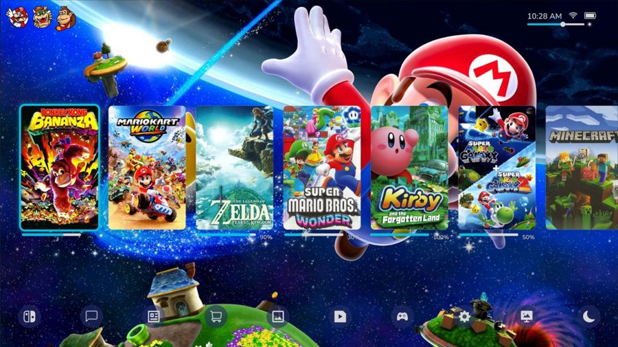

I'm an M.Eng. in Human Factors Engineering at Virginia Tech with a foundation in human perception and cognitive psychology with experience in UX evaluation, experimental research, and interaction design. I care about designing systems and interfaces that think of the user first.
Human Factors of Visual Display Systems · Fall 2026
Critiqued and redesigned three published EU data visualizations: a radial chart, a cluttered multi-line chart, and a diverging choropleth map. Each redesign applied Cleveland & McGill's perceptual rankings and Tufte's data-ink ratio, starting as an Excel prototype, going through class feedback, and ending as an interactive Tableau Public dashboard.
Self Directed Project · Fall 2026
A usability evaluation conducted on a mobile app's task flows. User tasks were mapped and pain points identified through heuristic evaluation, then translated findings into Figma mockups for redesign. A moderated usability test is planned to validate findings and dig deeper into why the pain points occurred.
Human Information Processing · Fall 2026
Designed a controlled experiment to understand how color vision deficiency and glance duration affect a driver's ability to detect traffic signals. I built 80 unique stimuli varying across both dimensions and led the experimental design for a go/brake detection task, showcasing a direct application of signal detection theory to a real-world safety problem.

Human Factors System Design · Fall 2026
Led a 3-person team through a usability test of the Nintendo Switch 2's home screen UI. We defined target users and found pain points through task-based usability testing. I then designed a wireframe and lo-fi and hi-fi interactive Figma prototypes that address them, including full cover art, bottom navigation, story progress, and themes.
Designed and ran an IRB-approved study with 200+ participants while serving as Principal Investigator. Deployed three Qualtrics instruments and conducted a full statistical analysis in SPSS examining how sleep and mental health jointly predict cognitive performance. Presented findings at both the 2025 and 2026 JMU Psychology Symposium.
Contributed to research on categorical perception and working memory under cognitive load. Designed an experiment examining how background music affects backward digit span performance, configured 43 DirectRT trial files, and administered 20+ participant sessions of computer based auditory tasks.
I am a Human Factors Engineering M.Eng. student at Virginia Tech with a Cum Laude B.S. in Psychology from JMU. My expertise sits at the intersection of human perception, cognitive science, and systems design, allowing me to leverage human cognition and perception to build intuitive, user-centered technologies. I'm driven to take complex data and systems and design the interfaces and interactions that allow the user to succeed.
📍 Ashburn, VA (Washington, D.C. Metro Area) · Open to full-time onsite, hybrid, and remote roles
I'm actively looking for UX/UI, human factors, and cognitive engineering internships for Summer 2027. If my background fits what your team is working on, I'd love to talk.